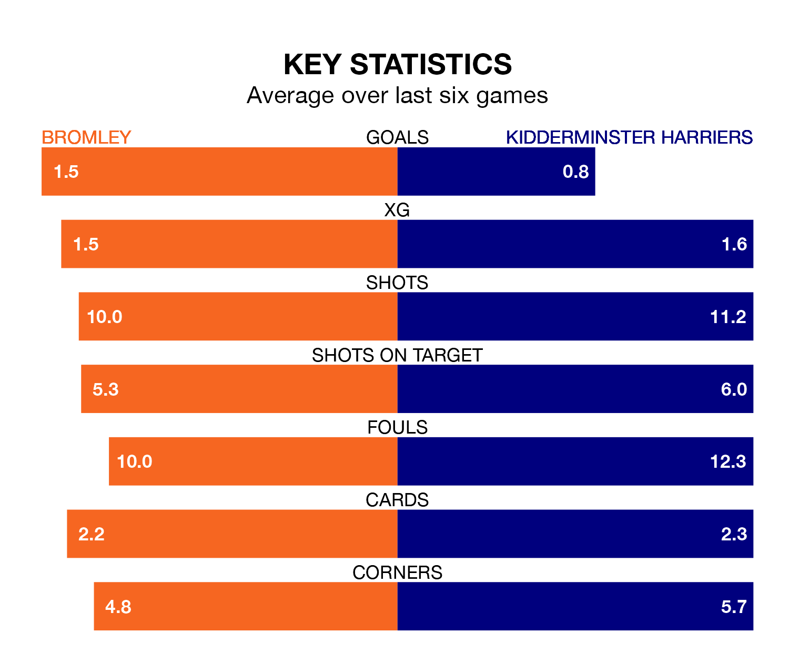

Relegation candidates Kidderminster Harriers face a challenge away against high-flying Bromley at Hayes Lane on Saturday.
Kidderminster Harriers are 21st in the National League table, and have picked up 10 wins and 11 draws in their 39 games to date.
The Ravens, meanwhile, are third in the standings with 66 points, having won 18 and drawn 12 of their first 37 matches, and are 25 points behind table-toppers Chesterfield.
With 34 goals in 39 games so far this season, Kidderminster Harriers are the league's lowest scorers with 0.9 goals per game. But they are conceding fewer than average too, letting in 47 goals at a rate of 1.2 per game.
Bromley, meanwhile, are above average scorers, with 1.6 goals per game, compared to a league average of 1.5. They have conceded 1.1 goals per game.
The Ravens are in mixed form in the National League, with two wins and two draws from their last six games.
And also with two wins and two draws over that period, Kiddy's form is identical – they have both taken eight points from 18.
Bromley's last match was on March 5, a 0-0 draw against Oldham Athletic.
Kidderminster Harriers drew 1-1 with Fylde last time out, on Tuesday, with Amari Aaron Morgan-Smith on the scoresheet.
Updated: 15:10 (UTC), 15/03/24